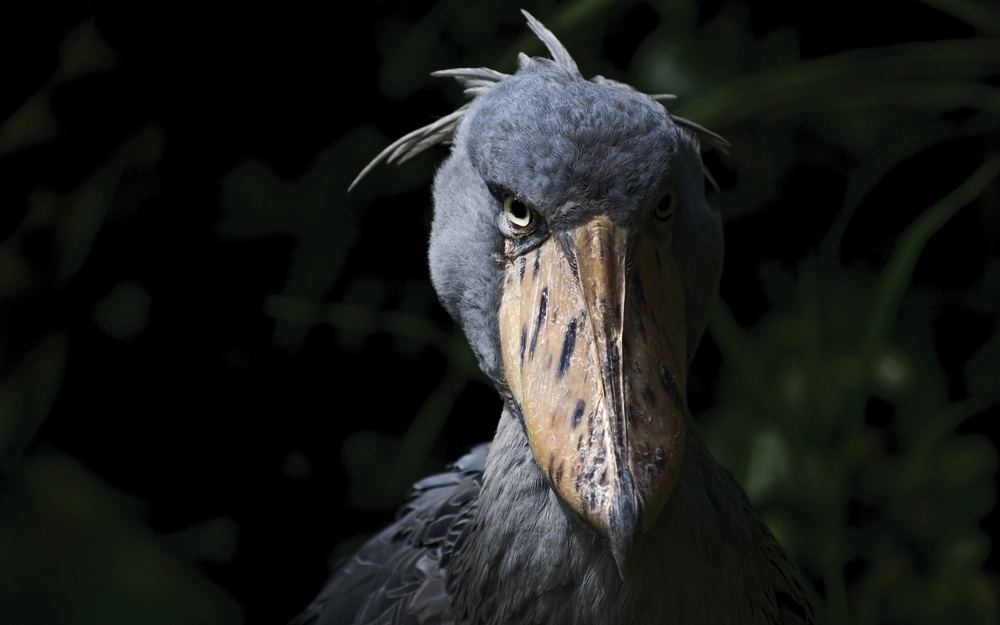

The Shoebill Stork

The shoebill stork (Balaeniceps rex) is a large, prehistoric-looking bird found in the swamps and wetlands of central tropical Africa. It is known for its enormous, shoe-shaped bill, which it uses to catch fish, frogs, and even baby crocodiles. Shoebills are solitary hunters, standing motionless for long periods before striking with lightning speed. Despite their intimidating appearance, they are generally calm birds, often bowing their heads in a slow-motion nod as a form of communication. Due to habitat loss and hunting, shoebills are classified as vulnerable.